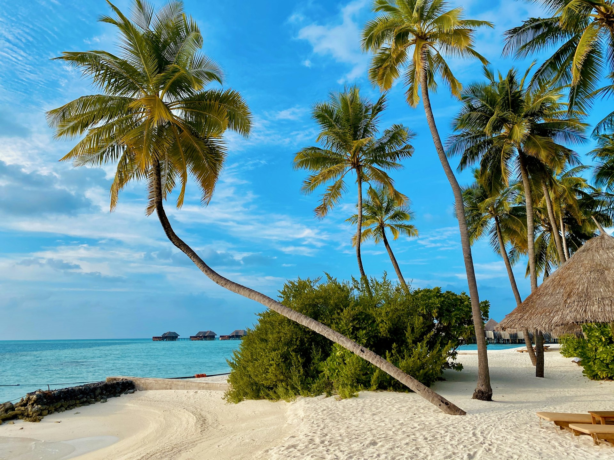

Pillar II — Remote Island Development
有人418離島の未来を拓く地域づくり
Remote Island Development
国立公園・国定公園及びそのバッファゾーンを多々有する日本国内の離島のうち、有人島418離島に焦点をあて離島振興に取り組んでいます。
2018年・2019年と現・奄美群島国立公園の与路島エリア、大山隠岐国立公園の隠岐の島・西ノ島エリアにおいて、農林水産省の農泊推進交付金を活用して離島活性化に取り組んで参りました。
2020年より、与路島において設立された与路島観光商工協会の事務局支援を行い、2025年9月より同協会の活動自体を当団体の活動とすることにいたしました。離島活性化の先進事例づくりを主体的に取り組むことで、全国の離島振興のみならず、全国の国立公園・国定公園への知見・成功事例の共有を目指します。
奄美群島国立公園 — 与路島
海域が国立公園指定区域、有人離島の陸地はバッファエリアという特殊な位置づけを持つ与路島。古民家宿の整備、史跡の保全、ビジターセンター＆カフェの開設を通じて、島の魅力を活かした持続可能な地域づくりのモデルを構築しています。
Track Record
| 2018–2019年 | 農林水産省の農泊推進交付金を活用し、奄美群島国立公園・与路島エリア、大山隠岐国立公園・隠岐の島/西ノ島エリアにて離島活性化事業を実施。 |
| 2021年 | 秘境好きの奄美大島リピーター向け古民家宿をNational Park Style Comincaとして竣工し営業許可を取得。 |
| 2025年6月 | 与路島の琉球支配時代の伝説の史跡「オオアムシャレの碑」を整備。 |
| 2025年8月 | 古民家を改修し、与路島のビジターセンター＆Café OleOleを開設。地域の交流拠点として機能開始。 |
| 2025年9月 | 与路島観光商工協会の活動を当団体の活動として統合。離島振興の先進事例づくりを主体的に推進する体制を構築。 |